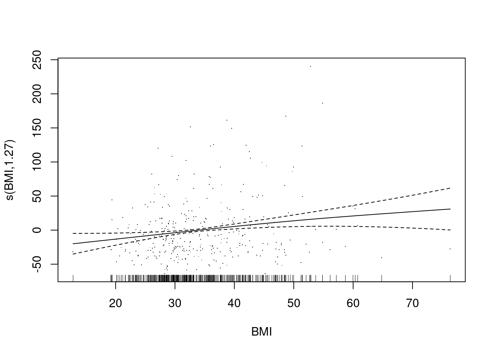
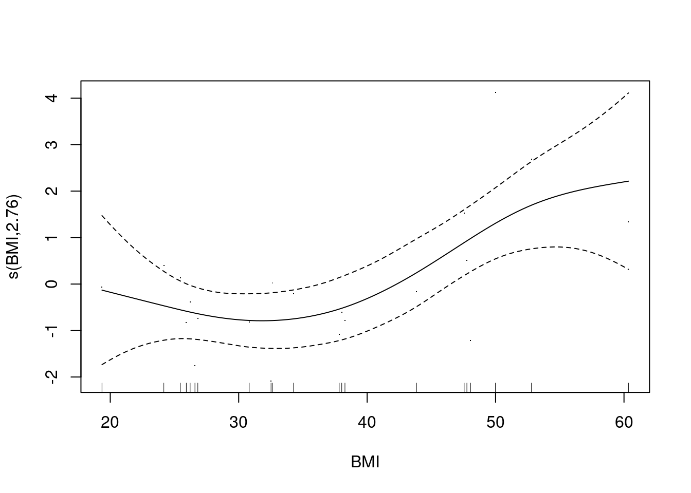
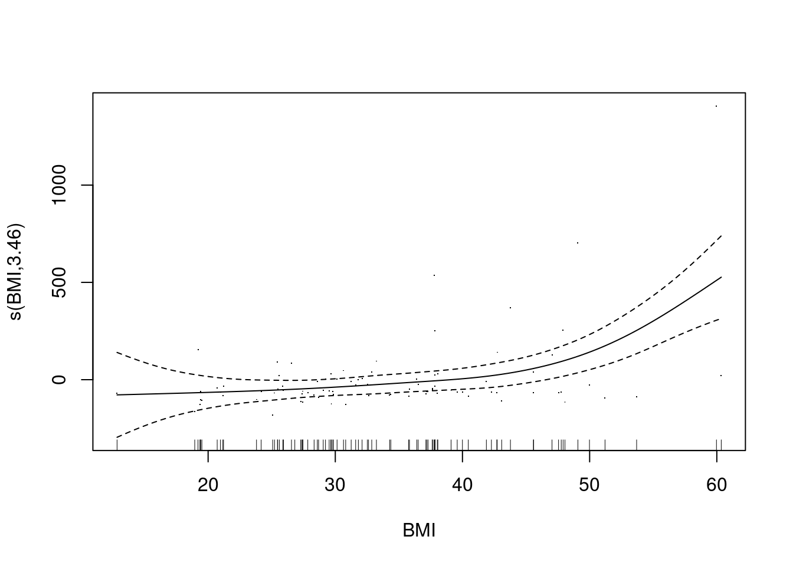
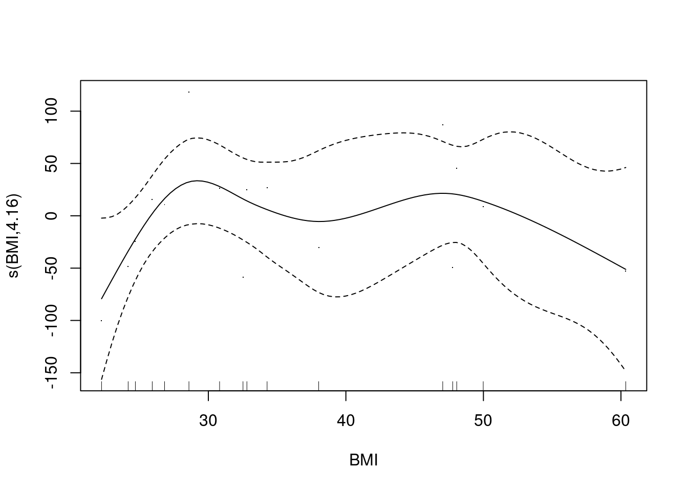

# hide this code chunk#| echo: false#| message: false# defines the se functionse <-function(x) {sd(x, na.rm =TRUE) /sqrt(length(x))}#load these packages, nearly always neededlibrary(tidyverse)# sets maize and blue color schemecolor_scheme <-c("#00274c", "#ffcb05")
Purpose
To load in the participant data about their Cushing’s diagnoses and the procedures.
Experimental Details
Show the code
encounter.datafile <-"EncounterAll.csv"encounter.bmi.datafile <-"EncounterAnthropometricsBMI.csv"diagnosis.datafile <-"DiagnosesComprehensiveAll.csv"charlson.datafile <-"ComorbiditiesCharlsonComprehensive.csv"elixhauser.datafile <-"ComorbiditiesElixhauserComprehensive.csv"LabResults.datafile <-"LabResults.csv"cushings.datafile <-"CushingsDataClean.csv"library(readr) #for loading csv fileslibrary(dplyr) #for data cleaninglibrary(lubridate) #for date cleaninglibrary(knitr) #for kablescushings.data <-read_csv(cushings.datafile) %>%rename(ProcedureDate ="DeID_AdmitDate_Clean_procedure")#loaded in data about when their cushings procedures were encounter.bmi.data <-read_csv(encounter.bmi.datafile)encounter.data <-read_csv(encounter.datafile) |>mutate(DeID_AdmitDate_Clean =as_date(mdy_hm(DeID_AdmitDate))) %>%#clean and format into just dates not timesleft_join(encounter.bmi.data, ,by=c("DeID_PatientID","DeID_EncounterID")) %>%#add in BMI data for each encounter left_join(cushings.data,by="DeID_PatientID") %>%# added in time of cushings diagnosismutate(TimePoint =case_when(ProcedureDate <= DeID_AdmitDate_Clean ~"Before", ProcedureDate > DeID_AdmitDate_Clean ~"After",.default="Unknown")) %>%# defined each encounter as before or aftermutate(ProcedureFollowUp = ProcedureDate - DeID_AdmitDate_Clean)diagnosis.data <-read_csv(diagnosis.datafile) %>%left_join(encounter.data,by=c("DeID_PatientID","DeID_EncounterID"))charlson.data <-read_csv(charlson.datafile) %>%left_join(encounter.data,by=c("DeID_PatientID","DeID_EncounterID"))elixhauser.data <-read_csv(elixhauser.datafile) %>%left_join(encounter.data,by=c("DeID_PatientID","DeID_EncounterID"))LabResults.data <-read_csv(LabResults.datafile) %>%left_join(encounter.data,by=c("DeID_PatientID","DeID_EncounterID"))total.participants <-distinct(encounter.data, DeID_PatientID) %>%nrow()
Raw Data
Relevant patient data is in these files:
##Go back and describe each data file. Elixhauser, charlson, labresults
Diagnoses are in DiagnosesComprehensiveAll.csv. This includes patient ID, encouter ID, TermCodeMapped (ICD code).
The EncounterAll.csv contains metadata about encounters including dates and BMIs
This files was most recently updated on 2025-09-29. This script was most recently updated on Mon Sep 29 17:02:54 2025.
Lab Results
There are 476 unique patients in this data set.
Show the code
LabResults.data |>count(RESULT_CODE) |>arrange(-n) |>kable(caption="Total number of lab results for cases.")
Total number of lab results for cases.
RESULT_CODE
n
GLUC
4563
POT
4378
AST
714
ALT
709
KA
453
K+A
272
APOTA
244
TRIG
96
KV
75
K+V
58
POTU
51
A1C
35
CHOL
28
HDL
27
CHOL/HDL
26
LDLC
26
APOTV
17
DLDL
4
GLUC_WB
3
INS
3
FTRIG
2
TRIGF
2
GLYC
1
NHDL
1
POTUQ
1
WBPOT
1
Type 2 Diabetes Lab Results
Glucose Measurements
Show the code
glucose.data <- LabResults.data %>%filter(RESULT_CODE %in%c("GLUC","GLUC_WB")) %>%mutate(value =as.numeric(VALUE)) %>%#forced into numeric form arrange(DeID_AdmitDate_Clean) %>%#sort by datedistinct(DeID_PatientID,.keep_all = T) %>%#unique casesmutate(Obesity =if_else(BMI>30, "Obese","Non-Obese")) glucose.summary <- glucose.data %>%group_by(TimePoint) %>%summarize(mean=mean(value,na.rm=T),se=se(value),n=length(value))glucose.summary %>%kable(caption="Summary of glucose levels before and after procedures")
Summary of glucose levels before and after procedures
TimePoint
mean
se
n
After
102.2368
5.197566
76
Before
133.1354
2.410461
347
Unknown
122.7647
5.179519
17
NA
115.0000
1.000000
2
We found 442 patients that had a lab result for a HbA1c test.
Now looking at the effect of BMI
Show the code
glucose.summary.bmi <- glucose.data %>%group_by(TimePoint,Obesity) %>%summarize(mean=mean(value,na.rm=T),se=se(value),n=length(value))glucose.summary.bmi %>%filter(TimePoint=="Before") %>%filter(!(is.na(Obesity))) %>%kable(caption="Summary of Hb1ac levels before and after procedures")
Summary of Hb1ac levels before and after procedures
library(broom)library(mgcv)gam(value~s(BMI),data=glucose.data %>%filter(TimePoint=="Before"),REML=TRUE) -> gam.glucoselm(value~BMI,data=glucose.data %>%filter(TimePoint=="Before")) -> lm.glucoseAIC(lm.glucose, gam.glucose) %>%kable(caption="Glucose for linear and nonlinear models,lower AIC indicates better model fit")
Glucose for linear and nonlinear models,lower AIC indicates better model fit
df
AIC
lm.glucose
3.000000
3577.600
gam.glucose
3.267101
3577.559
Show the code
gam.glucose %>% tidy %>%kable()
term
edf
ref.df
statistic
p.value
s(BMI)
1.267101
1.494824
6.581876
0.0034267
Show the code
lm.glucose %>% tidy %>%kable(caption="Linear model for glucose prior to intervention")
Linear model for glucose prior to intervention
term
estimate
std.error
statistic
p.value
(Intercept)
103.6243701
9.4480336
10.967824
0.0000000
BMI
0.8741101
0.2661526
3.284244
0.0011286
Show the code
plot(gam.glucose, pages =1, residuals =TRUE)

Show the code
hba1c.data <- LabResults.data %>%filter(RESULT_CODE %in%c("A1C", "XXA1C", "A1C EX", "X0022")) %>%mutate(value =as.numeric(VALUE)) %>%#forced into numeric form arrange(DeID_AdmitDate_Clean) %>%#sort by datedistinct(DeID_PatientID,.keep_all = T) %>%#unique casesmutate(Obesity =if_else(BMI>30, "Obese","Non-Obese")) hba1c.summary <- hba1c.data %>%group_by(TimePoint) %>%summarize(mean=mean(value,na.rm=T),se=se(value),n=length(value))hba1c.summary %>%kable(caption="Summary of Hb1ac levels before and after procedures")
Summary of Hb1ac levels before and after procedures
TimePoint
mean
se
n
After
6.180000
0.5112729
5
Before
6.854167
0.3131756
24
Unknown
5.300000
NA
1
NA
5.950000
0.9500000
2
We found 32 patients that had a lab result for a HbA1c test.
Now looking at the effect of BMI
Show the code
hba1c.summary.bmi <- hba1c.data %>%group_by(TimePoint,Obesity) %>%summarize(mean=mean(value,na.rm=T),se=se(value),n=length(value))hba1c.summary.bmi %>%filter(TimePoint=="Before") %>%filter(!(is.na(Obesity))) %>%kable(caption="Summary of Hb1ac levels before and after procedures")
Summary of Hb1ac levels before and after procedures
library(broom)library(mgcv)gam(value~s(BMI)+AgeInYears,data=hba1c.data %>%filter(TimePoint=="Before"),REML=TRUE) -> gam.hba1clm(value~BMI+AgeInYears,data=hba1c.data %>%filter(TimePoint=="Before")) -> lm.hba1cAIC(lm.hba1c, gam.hba1c) %>%kable(caption="AIC for linear and nonlinear models,lower AIC indicates better model fit")
AIC for linear and nonlinear models,lower AIC indicates better model fit
df
AIC
lm.hba1c
4.000000
74.25328
gam.hba1c
5.759355
71.02013
Show the code
gam.hba1c %>% tidy %>%kable()
term
edf
ref.df
statistic
p.value
s(BMI)
2.759355
3.450598
4.121414
0.0190887
Show the code
plot(gam.hba1c, pages =1, residuals =TRUE)

Used a generalized additive model with a splined term for BMI. The EDF for this was 2.7593546, where \(edf > 1\) suggests nonlinearity, this was a better model fit based on the AIC.
ALT
Show the code
alt.data <- LabResults.data %>%filter(RESULT_CODE %in%c("ALT")) %>%mutate(value =as.numeric(VALUE)) %>%#forced into numeric form arrange(DeID_AdmitDate_Clean) %>%#sort by datedistinct(DeID_PatientID,.keep_all = T) %>%#unique casesmutate(Obesity =if_else(BMI>30, "Obese","Non-Obese")) alt.summary <- alt.data %>%group_by(TimePoint) %>%summarize(mean=mean(value,na.rm=T),se=se(value),n=length(value))alt.summary %>%kable(caption="Summary of ALT levels before and after procedures")
Summary of ALT levels before and after procedures
TimePoint
mean
se
n
After
39.47692
2.646488
65
Before
104.60870
21.066012
92
Unknown
68.18182
20.844366
11
NA
27.33333
9.938701
3
We found 171 patients that had a lab result for a ALT test.
AST
Show the code
ast.data <- LabResults.data %>%filter(RESULT_CODE %in%c("AST")) %>%mutate(value =as.numeric(VALUE)) %>%#forced into numeric form arrange(DeID_AdmitDate_Clean) %>%#sort by datedistinct(DeID_PatientID,.keep_all = T) %>%#unique casesmutate(Obesity =if_else(BMI>30, "Obese","Non-Obese")) ast.summary <- ast.data %>%group_by(TimePoint) %>%summarize(mean=mean(value,na.rm=T),se=se(value),n=length(value))ast.summary %>%kable(caption="Summary of AST levels before and after procedures")
Summary of AST levels before and after procedures
TimePoint
mean
se
n
After
26.33846
1.145282
65
Before
73.26087
19.732086
92
Unknown
51.36364
16.840575
11
NA
50.00000
33.005050
3
We found 171 patients that had a lab result for a AST test.
Now looking at the effect of BMI
Show the code
alt.summary.bmi <- alt.data %>%group_by(TimePoint,Obesity) %>%summarize(mean=mean(value,na.rm=T),se=se(value),n=length(value))alt.summary.bmi %>%filter(TimePoint=="Before") %>%filter(!(is.na(Obesity))) %>%kable(caption="Summary of ALT levels before and after procedures")
library(broom)library(mgcv)gam(value~s(BMI)+AgeInYears,data=alt.data %>%filter(TimePoint=="Before"),REML=TRUE) -> gam.altlm(value~BMI+AgeInYears,data=alt.data %>%filter(TimePoint=="Before")) -> lm.altAIC(lm.alt, gam.alt) %>%kable(caption="AIC for linear and nonlinear models,lower AIC indicates better model fit for ALT levels")
AIC for linear and nonlinear models,lower AIC indicates better model fit for ALT levels
df
AIC
lm.alt
4.000000
1174.292
gam.alt
6.458279
1166.152
Show the code
gam.alt %>% tidy %>%kable()
term
edf
ref.df
statistic
p.value
s(BMI)
3.458279
4.338225
6.785832
7.15e-05
Show the code
plot(gam.alt, pages =1, residuals =TRUE)

Used a generalized additive model with a splined term for BMI. The EDF for this was 3.4582788, where \(edf > 1\) suggests nonlinearity, this was a better model fit based on the AIC.
LDL Cholesterol
Show the code
ldl.data <- LabResults.data %>%filter(RESULT_CODE %in%c("LDLC", "DLDL")) %>%mutate(value =as.numeric(VALUE)) %>%#forced into numeric form arrange(DeID_AdmitDate_Clean) %>%#sort by datedistinct(DeID_PatientID,.keep_all = T) %>%#unique casesmutate(Obesity =if_else(BMI>30, "Obese","Non-Obese")) ldl.summary <- ldl.data %>%group_by(TimePoint) %>%summarize(mean=mean(value,na.rm=T),se=se(value),n=length(value))ldl.summary %>%kable(caption="Summary of LDL-C levels before and after procedures")
Summary of LDL-C levels before and after procedures
TimePoint
mean
se
n
After
101.5
43.50000
2
Before
123.5
11.11807
21
Unknown
79.5
36.50000
2
NA
104.0
42.00000
2
We found 27 patients that had a lab result for a LDL-C test.
Now looking at the effect of BMI
Show the code
ldl.summary.bmi <- ldl.data %>%group_by(TimePoint,Obesity) %>%summarize(mean=mean(value,na.rm=T),se=se(value),n=length(value))ldl.summary.bmi %>%filter(TimePoint=="Before") %>%filter(!(is.na(Obesity))) %>%kable(caption="Summary of Hb1ac levels before and after procedures")
Summary of Hb1ac levels before and after procedures
library(broom)library(mgcv)gam(value~s(BMI)+AgeInYears,data=ldl.data %>%filter(TimePoint=="Before"),REML=TRUE) -> gam.ldllm(value~BMI+AgeInYears,data=ldl.data %>%filter(TimePoint=="Before")) -> lm.ldlAIC(lm.ldl, gam.ldl) %>%kable(caption="AIC for linear and nonlinear models,lower AIC indicates better model fit")
AIC for linear and nonlinear models,lower AIC indicates better model fit
df
AIC
lm.ldl
4.000000
180.8824
gam.ldl
7.155128
177.3442
Show the code
gam.ldl %>% tidy %>%kable()
term
edf
ref.df
statistic
p.value
s(BMI)
4.155128
4.980183
1.239823
0.3462161
Show the code
plot(gam.ldl, pages =1, residuals =TRUE)

Used a generalized additive model with a splined term for BMI. The EDF for this was 4.1551284, where \(edf > 1\) suggests nonlinearity, this was a better model fit based on the AIC.